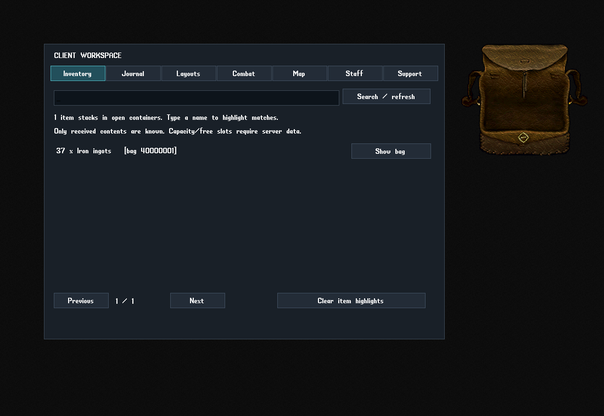

Inventory & journal
Find items in open bags, highlight matches and search or copy received journal text.
CLASSICUO · WINDOWS x64 · UPDATE 2
A practical workspace, an Invicta health bar and optional staff tools, in one complete download.
Includes the Windows runtime and first-time setup utility. Bring your shard's UO game data and connection details. No game archives, accounts or personal settings are included.
Download checksums
EXISTING CLASSICUO FOLDER
AFTER LOGIN
Type -workspace or click Workspace on the toolbar. Type -healthbar to open the Invicta health bar.
Find items in open bags, highlight matches and search or copy received journal text.
Save window positions, view received character status, manage markers and show server-supported party positions.
Export a file-access report. The optional maintenance utility verifies trusted asset packs and keeps rollback backups.
OPTIONAL · SPHERE STAFF
GM Tools requires the server to confirm PLEVEL 4 or higher. Without the access helper or a valid reply, staff tools stay locked. Ordinary play, Workspace and the health bar continue to work.
The ZIP includes two optional helpers under ServerHelper:
Install both once in the server's active script tree and resource list, then use the server's normal resync or restart procedure. Follow ServerHelper/INSTALL.txt or the PDF. These files belong on the server, not in the player's game-data folder.
Server permissions still control commands. Access is rechecked and closes on revocation, timeout or disconnect. Other server engines need compatible helpers. UO Asset Studio and its optional bridge are separate downloads.
Custom community build based on ClassicUO 1.1.0.0 with Client Quality Update 2 changes. Drop-in package 1, released 20 September 2026.
323 client tests and 18 setup tests passed. The extracted package started and closed normally; file hashes, ZIP integrity and preservation of existing settings were checked. The screenshots use controlled sample data. Check login, UI scale, dragging, self-targeting, saved layouts and permitted staff actions on your shard.